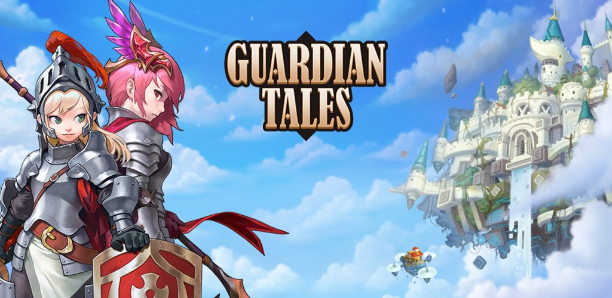
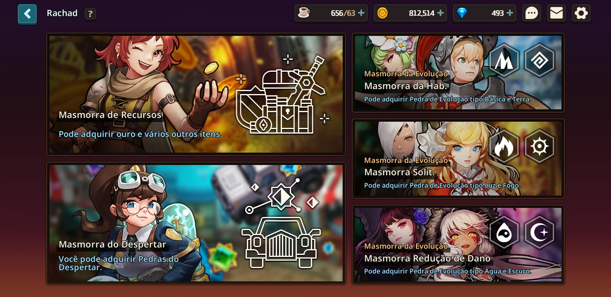
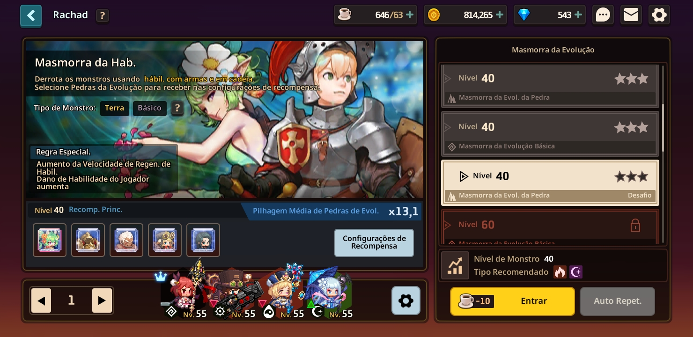
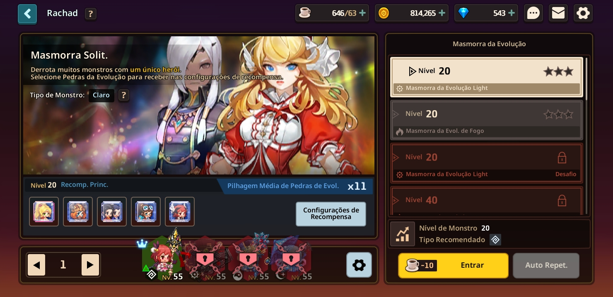
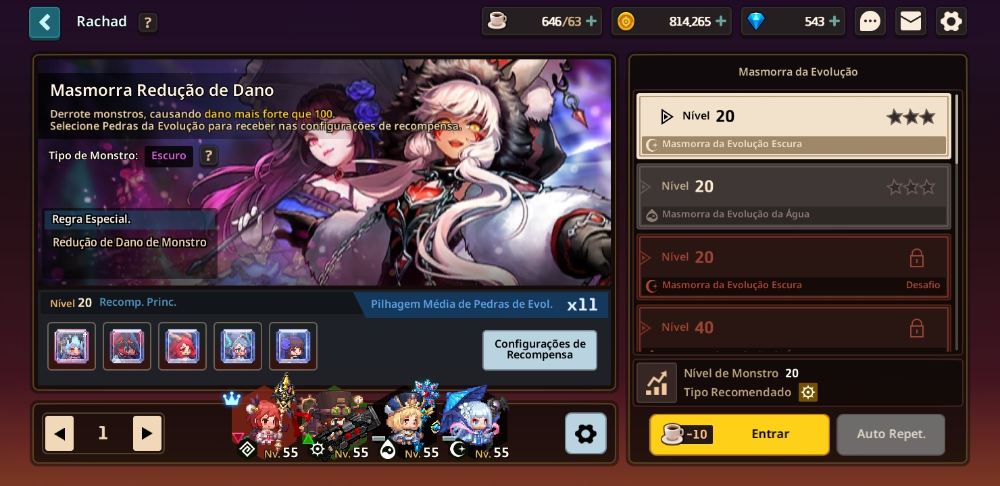
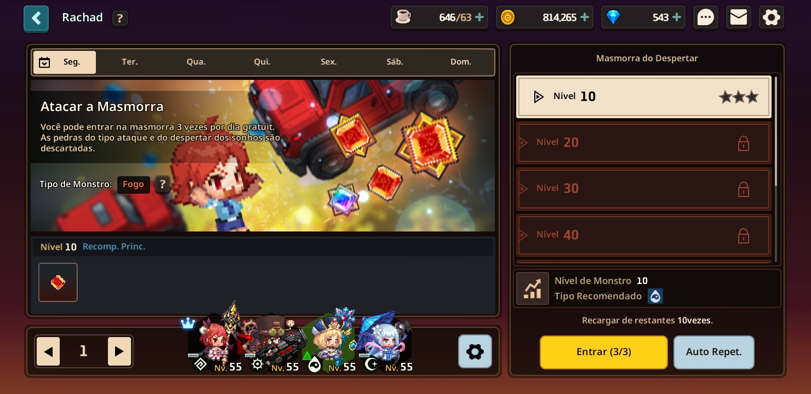

Guia Guardian Tales
Explorando o Mundo
Meu nome é Luan Martins, sou um progamador na area de websites. Eu sempre gostei de jogar Guardian Tales, tanto que é um dos meu jogos favoritos, resolvi então criar um site guia para iniciantes, nele vai ter desde sobre todos os mundos até como evoluiar rapidamente seguindo os meus métodos.
Sobre o site em si, temos uma barra de navegação acima. Em home você irar encontrar tudo que ha no lob do jogo apartir do mundo 2, como a Loja, coleção, inventario, melhorar e convocação, alem do Heavenhold. Na parte da Aventura você ira encontrar tudo sobre os mundos e ainda a Rachad, Torre, Coliseu, Multiplayer, Historia Secundaria e a Kama zon. Na parte de Heroi você encontrara tudo sobre o heroi, desde os equipamentos até status e despertar.

Introdução a Rachad: Masmorras
Em todo jogo de rpg é necessario ter uma forma de se farmar e no caso do Guardian a Rachad. A rachad é liberada logo no mundo 1 se não me engano, ela é composta por 5 tipos de rachad sem contar a do espelho que faz parte so Heavenhold. São elas : Masmorra de Recursos (ouro, experiencia/xp e itens), Masmorra do Despertar e Masmorra da Evolução (habilidade, solo e redução). Ao final de todas as rachad estarei dando dicas de up nelas e farm em si.
Masmorra de Recursos: Ouro, Experiencia e Items
As Masmorras de recursos são bem basicas e auto explicativas, na de ouro você farm ouro, xp farma xp e continua. Uma coisa a se dizer das masmorras de recursos é que elas são inuteis apartir do mundo 7, vou lhes dizer o motivo. Até o mundo 7 suas armas nãoe estão maximizadas, isso faz com que você tenha que farmar ouro e martelos, mas do mundo 8 para cima, ouro e itens se tornam futeis e você começa a foca no up de heroi e convocação (eu por exemplo estou no mundo 10, tenho 3 milhões de ouro e um monte de martelo e não uso pra nada porque to tentando junta milhagem pra compra a Marina).

Masmorra de Evolução : Rachad de Habilidade
Nas marmorras de evolução uma coisa é basica, elas servem para ganhar pedras de evolução, mas não va achando que é só jogar umas duas ou três vezes que você conseguira evoluir seu hero. A Rachad de habilidade é dos elementos basico e terra, ou seja você ganha pedras de evolução de herois dos elementos basico e terra, o requisito dessa masmorra ou assim por se dizer desafio é que só skill da dano nos monstros, ataque basico da 1 de dano e não tem cura, essa pode ser considerada a masmorra mais dificil de subir por esse motivo, então pegue nivel 60 ou 69 e ai começe a subir na masmorra, aconselho você tambem a subir ate o desafio de nivel 20 basico, ja que seu hero principal é basico (aquele que você ganhar no inicio do jogo). Caso queira ter um bom aproveitamento do farm, tente fazer umas 10 a 30 vezes a masmorra, mas é claro só faça isso se tiver o avanço rapido. Sobre os elementos de heroi, aconselho utilizar nessa masmorra heros dos elementos sombrio e fogo.

Masmorra de Evolução : Rachad Solo
Sim sera o mesmo texto da outra com modificações. A Rachad Solo é dos elementos Fogo e Claro (ou luz se praferir), ou seja você ganha pedras de evolução de herois dos elementos fogo e claro, o requisito dessa masmorra ou assim por se dizer desafio é que você deve jogar sozinho então seria bom que você so subi-se até o desafio de nivel 20 do elemento que você quer, se quiser evoluir mais para ter um farm melhor, faça isso quando tiver no mundo 11 ou até 13 porque é dificil subir solo. Sobre os elementos de heroi, aconselho utilizar nessa masmorra heros dos elementos basico e água.

Masmorra de Evolução : Rachad de Redução de Dano
Sim sera o mesmo texto da outra com modificações. A Rachad de Redução é dos elementos Sombrio e Água, ou seja você ganha pedras de evolução de herois dos elementos sombrio e água, o requisito dessa masmorra ou assim por se dizer desafio é que você deve causar dano acima do que é pedido, por exemplo se la peda 100 de dano você deve causar mais que isso, o dificil dessa masmorra é que se seu dano solo (dano de um heroi) não for maior que o pedido você não consegue subir, aconselho a subir novamente até o desafio do nivel 20 do elemento que você precisa e só continuar a subir depois de pegar nivel 69 (mundo 10) ou até mundo 12. Sobre os elementos de heroi, aconselho utilizar nessa masmorra heros dos elementos claro e terra.

Masmorra Do Despertar
Sobre essa masmorra não ha muito o que se dizer a não ser que ela setorna inutil e obsoleta ao longo do tempo, quando o despertar dos seus herois começar a ficar muito caro o farm dessa masmorra não adiantara de nada e não vale a pena gastar 300 dimas por 3 entradas, é melhor você juntar 2.700 e tentar pegar o heroi do banner. Ela é dividida em 3 tipos ou 4 se preferir, dano, vida, defesa e sonho. Cada dia da semana é umas das 3 primeiras sendo revezado, no sabado é a do sonho e no domingo é a masmorra caotica que é farm aleatorio.
Torre
A torre ou como eu gosto de chamar Tower é para mim uma coisa extremamente inutil que se repete, o esquema da torre se repete 2 vezes no heavenhold, na TH (Torre do Horizonte) e na THh (Torre do Heavenhold). Basicamente ne torre existem 3 tipos de fases, batalha normal que tem um peão de monstro, puzzle que tem um peão de quadrado e boss que tem um peão de minotauro. Os itens que você ganahr nela são variados mas apartir de certo ponto se tornam os mesmo, nas fases de boss para cima de 30 você ganhar diamantes como recompensa (na casa do boss apenas). As vezes uma das casas tem algum requisito que se não for completo você não pode avançar.
Coliseu e Arena Multiplayer
Se você ja leu a parte da elevalação orbital então deve saber mais ou menos como é o Coliseu. No Coliseu você monta seu time de 4 hero e eles lutam por conta, la os status são bem mais upados, por exemplo meu hero mais forte tinha 200.000 de vida. Tanto no coliseu quanto na arena temos o sistema de patentes ou rank se preferir, ele começa no bronze e vai ate o top 1, sim é bronze, praurweqteurweq, ouro, diamante e os tops, de top 10 até top 1.
Passando para a Arena multiplayer, ela é completamente diferente do coliseu, sendo seu sistema de batalha 3x3 onde é dividido por turnos, no turno 1 você luta contra o heroi inimigo e se você sair vivo esse hero continua na proxima luta, ou seja uma arena de pvp. Como dito em relação ao rank é a mesma coisa mas essa arena é mais dinamica na hora das lutas, o que a torna muito legal e divertida em relação ao coliseu.
Historia Secundaria
Sobre as historias secundarias eu ja começo dizendo uma coisa, jogue a historia secundaria Rua Kantebury 21, ela é a unica que eu joguei das historias secundarias e posso dizer com certeza que é muito boa, o melhor de tudo é que você pode jogar com a deusa Marina, nossa como essa hero é linda e perfeita e... continuando jogue essa historia porque é boa. Em relaçãoa s outras não sei muito e ainda temos a mini-historias ou historia curta, elas eu tambem não conheço muito. Um dos motivos para fazer essa hsitorias extras é farmar café na loja com as moedas roxa e comprar a Skin do café sucubo da cavaleira que é maravilhosa e combina com o mundo 13. Outro motivo é para se distrair ja que elas não são muito dificeis e são divertidas de se fazer e ver (principalmente a da escola).
AVISO IMPORTANTE
Aqui teriamos a Kama-ZONE mas por alguns motivos tive que tira-la, na proxima atualização da pagina ja teremos a Kama-ZONE e a pagina do heroi concluidas, prometo colocar tambem os mundos 1, 2 e 3 para começo.